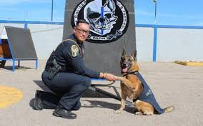

El trabajo humano y animal ha sido históricamente interdependiente. Desde la antigüedad, los seres humanos han utilizado animales para realizar tareas que requieren fuerza física, como el trabajo en el campo o el transporte de cargas.
Un ejemplo clásico es el uso de caballos y bueyes en la agricultura para arar los campos. Los animales no solo desempeñan un papel en la economía humana, sino que también son una parte integral de la historia del trabajo.
